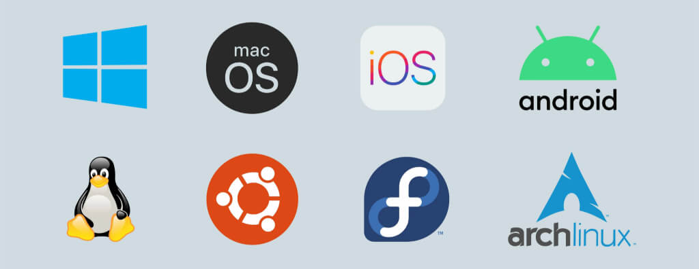
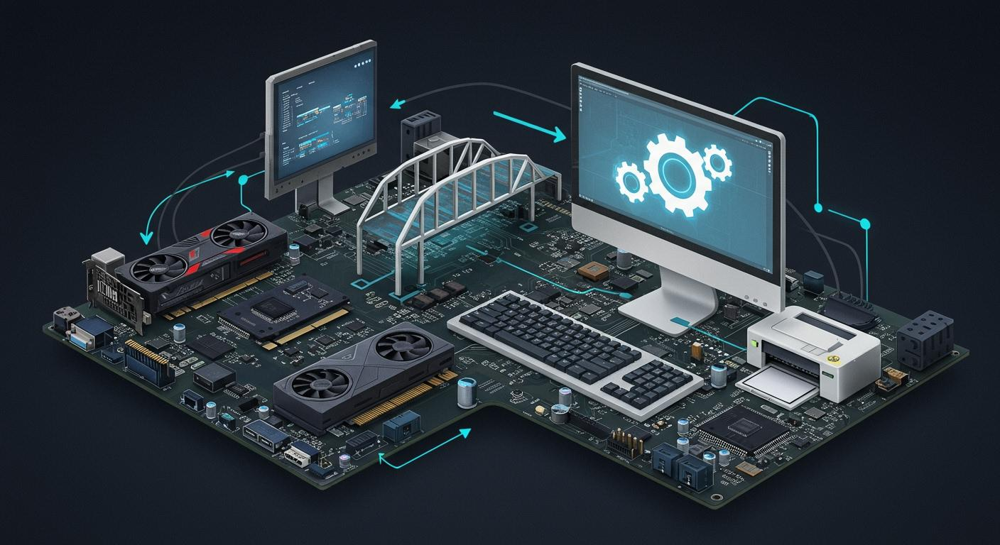
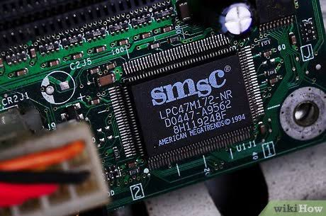

O que é um software?
Software é toda a parte lógica de um dispositivo. Se o hardware é o corpo (peças que você pode tocar), o software é o "pensamento" ou as instruções que dizem ao corpo o que fazer.
O software é dividido em categorias, dependendo da função que ele exerce:
➔ Software de Sistema (Básicos):
✱ Garante o funcionamento da máquina.
✱ Controla o hardware e os resources.
Exemplos: Windows, Android, drivers e BIOS.
➔ Software de Aplicativo (Utilitários):
✱ Executa tarefas específicas para o usuário.
✱ Atende necessidades de trabalho ou lazer.
Exemplos: WhatsApp, Word, Netflix e navegadores.
➔ Software de Programação:
✱ Ferramentas usadas para criar novos programas.
✱ Traduz código humano para a máquina.
Exemplos: Editores de código e compiladores.
Os softwares básicos são os programas essenciais para que um computador ou dispositivo eletrônico consiga funcionar. Eles fazem a "ponte" entre as peças físicas (hardware) e os programas que você usa no dia a dia.
Tipos de Softwares Básicos
Sistemas Operacionais (SO):
Gerenciam os recursos do sistema (memória, processador) e fornecem a interface para o usuário.
Exemplos: Windows, Linux e macOS.

Drivers de Dispositivo:
Pequenos programas que dizem ao sistema operacional como operar peças específicas de hardware.
Exemplos: Placas de vídeo, impressoras e mouses.

Firmware / BIOS:
Software básico gravado na memória do hardware que inicia o computador e prepara o SO.
Exemplos: BIOS e UEFI.

Tradutores de Linguagem:
Traduzem linguagens de programação para o código de máquina que o processador entende.
Exemplos: Compiladores de C ou Python.